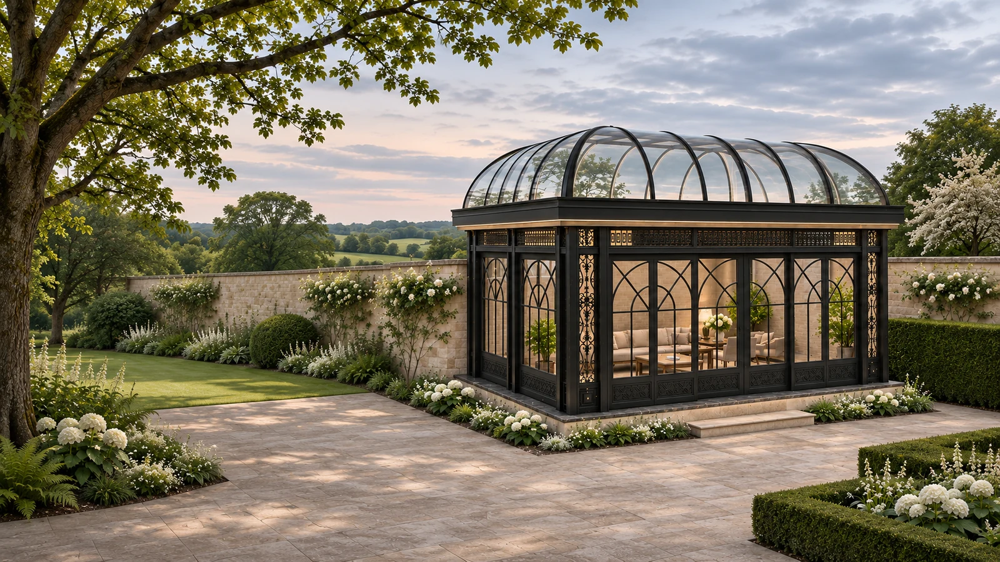
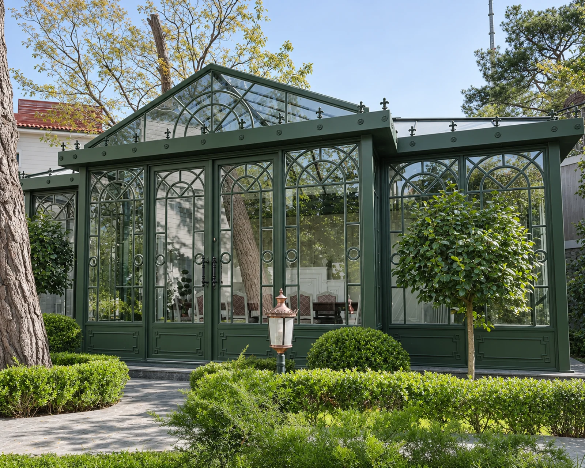
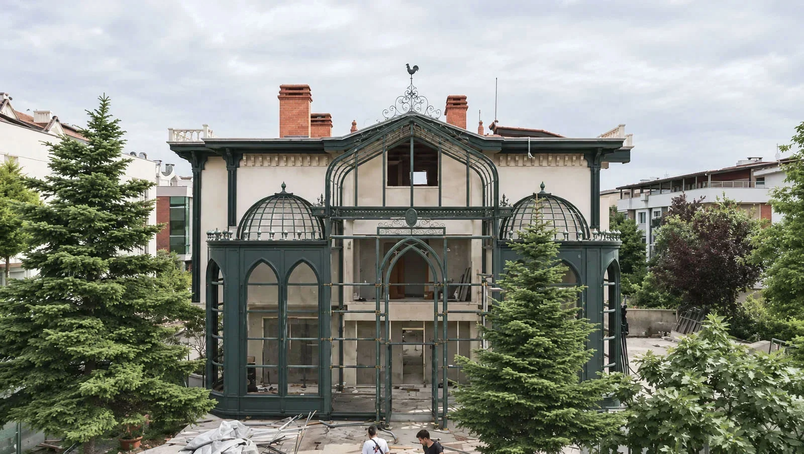

The relationship to your home
Consider the existing roofline, brickwork, window proportions and garden access. A new structure can complement those elements or make a deliberate, quieter contrast.

Individually considered spaces
Design visualisation
Marla Garden · London
Explore bespoke steel-framed conservatories for London homes: glazed garden rooms with classical detailing, curved rooflines or simpler contemporary forms. Here, steel refers to the frame of the glazed structure, rather than a steel base beneath a conservatory.
A dining room looking onto the planting, a quiet place to read or a room for gathering with friends: the purpose of the space should shape its footprint, roof and openings. Start with how the room will be used, then consider how it meets the house and the garden.
Consider the existing roofline, brickwork, window proportions and garden access. A new structure can complement those elements or make a deliberate, quieter contrast.
Explore decorative arches, curved forms and cresting alongside simpler frame patterns and straight architectural lines.
Orientation, ventilation, shading, glazing and heating should be considered together. The proposed specification and performance need to be assessed for the particular project.
Identify the responsibilities for survey, design, structure, glazing, foundations, installation and aftercare before agreeing the work.
Explore the direction
Explore the collection
Compare roof forms, glazing patterns and the relationship to the garden. Open a design to explore its details and reference views.
 Curved Conservatories
Curved ConservatoriesDesign collection
A continuous curved glazed roof sits above a dark rectangular conservatory. Tall window divisions and decorative upper panels give the long elevation an ordered rhythm.
Explore the design Curved Conservatories
Curved ConservatoriesDesign collection
A pale conservatory beneath a continuous curved roof. Repeated arched panels and a raised entrance give the broad glazed frontage a classical character.
Explore the design Glazed Garden Rooms
Glazed Garden RoomsDesign collection
Dark straight frames and a pitched glazed roof create a quieter garden-room direction. Broad elevations and clear glazing place the emphasis on the interior and the surrounding garden.
Explore the design Glazed Garden Rooms
Glazed Garden RoomsDesign collection
A white-framed glazed room with a pitched roof and clear architectural lines. The pale structure stands against open sky and the planted edge of the garden.
Explore the design Glazed Verandas
Glazed VerandasDesign collection
A pale glazed veranda runs beside a building and an outdoor dining terrace. Repeated arches and decorative roof-edge details give the long elevation its rhythm.
Explore the design Glazed Garden Rooms
Glazed Garden RoomsDesign collection
A long pale glazed room faces a pool terrace, with interior light visible through the window panels. A restrained roof edge gives the elevation a horizontal emphasis.
Explore the designLook closer
 Classic
ClassicConstruction
Repeated arched ribs and ornamental scrollwork reveal the structure of a long vaulted frame during construction.
Explore project
ClassicA green conservatory with a central glazed gable, fan-shaped glazing details and garden-facing double doors.
Explore project Contemporary
ContemporaryA rounded glass extension beside a terracotta-coloured house, with a curved glazed roof and two outward-opening front windows.
Explore projectSee the steel frame and glazing during assembly. These examples show work in progress.

Develop your project
Compare garden structure designs and bring your preferred references to the design discussion.
Our conservatory cost guide explains the decisions that shape a quotation.
Read the London conservatory planning guide for the questions to check for your site.
Share the setting and your preferred direction to discuss your garden project.
Planning your space
The steel frame forms the structure around the glazing. This is different from a steel conservatory base, which supports a building from below. The frame, glazing, corrosion protection, foundations and connection to the house should be defined in the project specification.
Start with photographs of the house and garden, an approximate footprint and a description of how you want to use the space. Designs from our collection can help explain your preferences.
The footprint, frame and roof design, glazing, decorative details, site access, foundations and connection to the house all affect the scope. A meaningful quotation needs a defined design and specification.
That depends on the proposed construction and intended use. Glazing, frame performance, ventilation, shading and heating need to be specified together; the appearance of a conservatory alone does not establish its thermal performance.
Conservatories follow the planning rules for house extensions. Some proposals qualify as permitted development, subject to limits and conditions; others require an application. Listed buildings, conservation areas and property-specific restrictions need particular attention. Check the proposal with your local planning authority before work begins. Planning permission and building regulations are separate matters.
Your next space
Share the setting, the way you want to use the space and the designs you are drawn to.
Plan your project